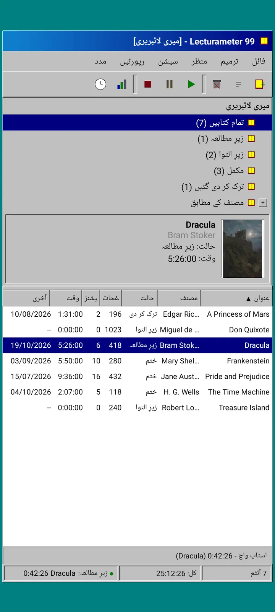
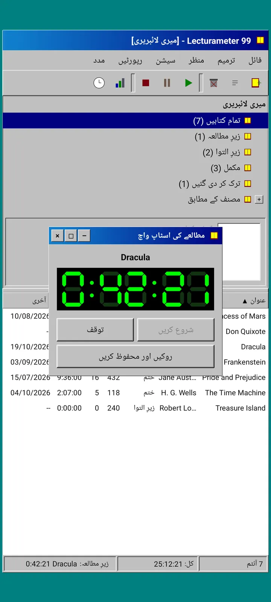
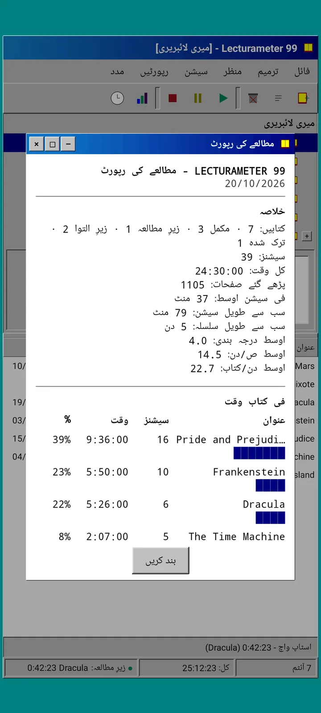
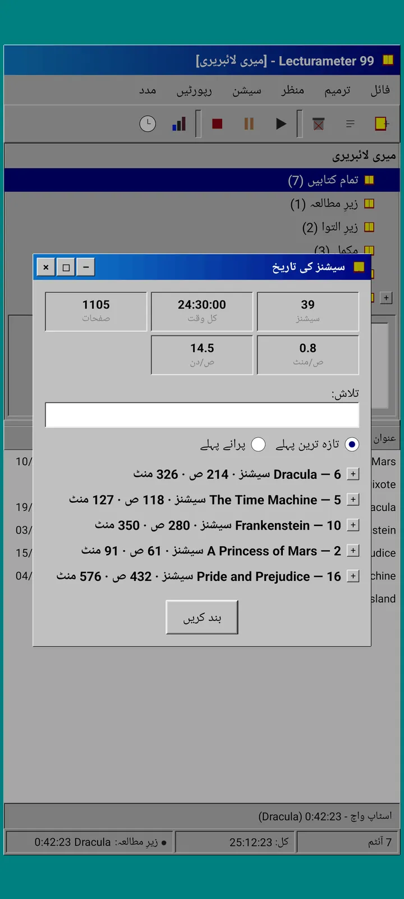
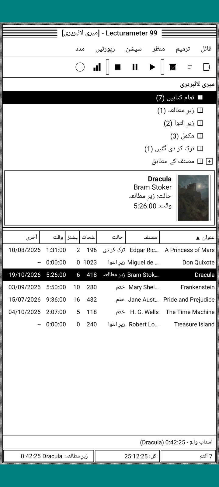
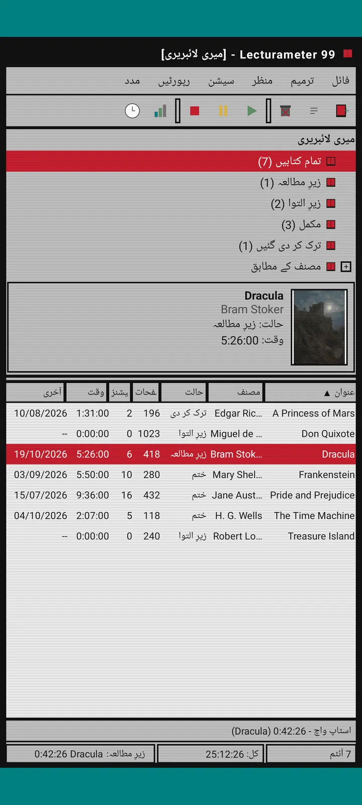
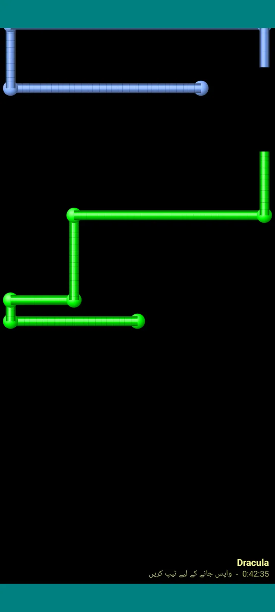

Lecturameter 1999
Lecturameter ایسے جیسے آپ نے اسے 1999 میں CD-ROM سے انسٹال کیا ہو۔ ایپ کا ایک متبادل کلائنٹ، ونڈوز، مینوز اور جدولوں کے ساتھ، جو آپ کے اصلی بیک اپس کھولتا ہے۔

یہ کیا ہے
نوے کی دہائی کے آخر کا ایک ڈیسکٹاپ پروگرام جو آپ کے فون پر چلتا ہے۔ فیروزی ڈیسکٹاپ پر ایک ونڈو، مینو بار، ٹول بار، فولڈر ٹری، گھنی جدول اور اسٹیٹس بار۔
- لائبریری ٹری: تمام کتابیں، زیرِ مطالعہ، زیرِ التوا، مکمل، ترک کی ہوئی اور مصنف کے لحاظ سے
- عنوان، مصنف، حالت، صفحات، سیشنز، وقت اور آخری مطالعے کے ساتھ جدول۔ ترتیب دینے کے لیے کالم کے عنوان کو دبائیں
- کتابوں کی اصلی تلاش، اسی کیٹلاگ سے جو Lecturameter استعمال کرتی ہے
- Lecturameter بیک اپ اور Goodreads CSV درآمد اور برآمد کرتا ہے۔ آپ کا ڈیٹا بغیر کچھ کھوئے اندر باہر جاتا ہے

یہ کیوں موجود ہے
ایک تجربہ: اصلی ایپ کو چھوئے بغیر، بالکل مختلف ڈیزائن مفروضوں کے تحت Lecturameter کا خیال شروع سے دوبارہ بنانا۔ تمام تعبیرات میں سے 1999 والی مجھے سب سے زیادہ پسند آئی، اس لیے میں نے اسے ایک مزے دار مشق کے طور پر مکمل کیا اور ایک پورا کلائنٹ بنا دیا۔ یہ جان بوجھ کر Lecturameter سے سادہ ہے: یہ ایک تجربہ ہے اور اصولاً اس کی مزید ڈیولپمنٹ نہیں ہوگی۔
- سبز LCD ڈسپلے والی تیرتی ونڈو میں اسٹاپ واچ۔ یہ حرکت کرتی ہے، ٹاسک بار میں سمٹ جاتی ہے اور اسٹیٹس بار میں گنتی جاری رکھتی ہے
- جب آپ روکتے ہیں تو سیشن محفوظ کرنے کا ڈائیلاگ آپ کے صفحات پوچھتا ہے اور آپ کی رفتار نکال دیتا ہے، بالکل Lecturameter کی طرح
- محفوظ کیے گئے سیشنز Lecturameter ہی کے سیشنز ہیں: اگر آپ Lecturameter 1999 کا بیک اپ برآمد کر کے Lecturameter میں درآمد کریں تو وہ جدید ایپ میں واپس آ جاتے ہیں۔

مطالعے کی رپورٹ
اعداد و شمار ایک چھپی ہوئی رپورٹ کی شکل میں ہیں: خلاصہ، بلاک بارز کے ساتھ ہر کتاب کا وقت، صفحات فی دن میں رفتار، حروف سے بنایا گیا سال کا کیلنڈر اور آخری سات دن۔

سیشنز کی تاریخ
سیشنز کتاب کے لحاظ سے ایک ٹری میں گروپ، جمع اور منفی کے نشانوں کے ساتھ، اور اوپر پانچ اعداد: سیشنز، کل وقت، صفحات، صفحات فی منٹ اور صفحات فی دن۔

سیشن محفوظ کریں
تاریخ، منٹ، پہلا اور آخری صفحہ، تبصرہ۔ آپ کے ٹائپ کرتے ہی خلاصہ صفحات اور رفتار نکال دیتا ہے۔ اگر آپ آخری صفحے تک پہنچ جائیں تو یہ پوچھتا ہے کہ کیا آپ نے کتاب مکمل کر لی۔

Pagi 99
Pagi بھی 1999 کا سفر کرتا ہے: پکسل نما اور اس زمانے کے آفس اسسٹنٹس کی طرح اسکرین پر آزاد۔ آپ اسے گھسیٹ سکتے ہیں، دبانے پر وہ ایک جملہ کہتا ہے اور پیلے غباروں میں ٹپس دکھاتا ہے۔
تھیمز
Classic 98 مفت اور ڈیفالٹ ہے۔ پیک میں چھ مزید شامل ہیں، ہر ایک کے اپنے پس منظر اور اپنی آوازوں کے ساتھ۔

اسے دیکھیں مینو سے منتخب کریں
دیکھیں، تھیم... ساتوں تھیمز کے ساتھ ایک ونڈو کھولتا ہے۔ تبدیلی ایک ساتھ ہر ونڈو، اسٹاپ واچ اور Pagi تک پہنچ جاتی ہے۔
- Classic 98، مفت اور ڈیفالٹ: سرمئی ونڈوز، گہرے نیلے ٹائٹل بار اور فیروزی ڈیسکٹاپ
- تھیم پیک: 1984, Gumdrop, Memory, Towers, Core اور 8-bit
- ہر تھیم اپنا ڈیسکٹاپ پس منظر اور ٹیپس، ونڈوز اور اسٹاپ واچ کے لیے اپنی آوازیں لاتا ہے
- اگر آپ خاموشی میں پڑھتے ہیں تو دیکھیں، تھیم کی آوازیں آوازوں کو بند کر دیتا ہے

Classic 98
سرمئی ونڈوز، گہرے نیلے ٹائٹل بار اور فیروزی ڈیسکٹاپ۔ مفت، ایپ اسی کے ساتھ کھلتی ہے۔

1984
ایک بٹ والا سیاہ و سفید ڈیسکٹاپ، نقطوں کے پیٹرن اور چوکور ونڈوز کے ساتھ۔

Gumdrop
شفاف رنگین پلاسٹک، گول بٹن اور پس منظر میں دھاریاں۔

Memory
نوے کی دہائی کے ڈسک کنسول کے مینوز، گہرے نیلے رنگوں میں۔

Towers
نوے کی دہائی کا ایک اور ڈسک کنسول، رات کے نیلے رنگ میں ہلکی نیلی لکیروں کے ساتھ۔

Core
ایک سیاہ اور سبز کنسول، جیسے ایسی اسکرین جو کبھی بند نہیں ہوتی۔

8-bit
موٹے پکسل، کم رنگ اور بلاک نما حروف۔

ادائیگی سے پہلے آزمائیں
کسی مقفل تھیم کو دبائیں اور پوری ایپ اس میں بدل جاتی ہے۔ اگر آپ خریدے بغیر بند کر دیں تو پچھلا تھیم واپس آ جاتا ہے۔
اسکرین سیورز
یہ صرف تب ظاہر ہوتے ہیں جب اسٹاپ واچ چل رہی ہو اور آپ فون کو ہاتھ نہ لگائیں۔ یہ 1، 3 یا 5 منٹ انتظار کرتے ہیں، یا کبھی نہیں۔ ایک ٹیپ آپ کو واپس لے آتا ہے اور اسٹاپ واچ گنتی جاری رکھتی ہے۔

اڑتی کتابیں
پکسل کتابیں جو سیاہ اسکرین پر اپنے سرورق پھڑپھڑاتی اڑتی ہیں۔

حروف کا میدان
کئی حروفِ تہجی کے حروف جو ستاروں بھرے آسمان کی طرح بہتے گزرتے ہیں۔

صفحات کی پائپیں
صفحات سے بنی پائپیں جو اسکرین بھرنے تک خود کو بناتی جاتی ہیں۔

اچھلتا Pagi
Pagi اسکرین کے کناروں سے ٹکرا کر اچھلتا ہے۔

مطالعے کی گھڑی
سیشن کا وقت بڑے LCD ہندسوں میں۔

Pagi کے لباس
Pagi 99 کے لیے آٹھ لباس۔ آپ انہیں دیکھیں، Pagi کا لباس... میں سے منتخب کرتے ہیں، اور ادائیگی سے پہلے پہن کر دیکھ سکتے ہیں۔
- کیسٹ پلیئر
- الٹی ٹوپی
- 3D چشمے
- نیون دھوپ کے چشمے
- ہاتھ میں فلاپی ڈسک
- چمڑے کی جیکٹ
- جیبی پالتو
- گتے کا تاج
اسٹور
ایپ مفت ہے اور مطالعہ درج کرنے کے لیے مکمل ہے۔ جو کچھ آپ خرید سکتے ہیں وہ صرف اس کی شکل بدلتا ہے۔
پوری ایپ، بغیر کسی وقت کی حد کے۔
- لائبریری، تلاش، اسٹاپ واچ اور سیشنز
- مطالعے کی رپورٹ اور سیشنز کی تاریخ
- Lecturameter بیک اپ اور Goodreads CSV، اندر اور باہر
- Classic 98 تھیم اور Pagi 99
- کوئی اکاؤنٹ نہیں اور کوئی اشتہار نہیں
ایک بار کی ادائیگیاں، کوئی سبسکرپشن نہیں۔
- تھیم پیک، €3.49: پس منظر اور آوازوں کے ساتھ 6 تھیمز، اور اسکرین سیورز بھی
- اسکرین سیورز، €1.99: 5 اسکرین سیورز
- Pagi کے لباس، €1.99: 8 لباس
- پورا 1999، €4.49: تھیمز، اسکرین سیورز اور لباس
مدد مینو میں اختیاری ٹپس، اگر آپ مجھے ایک کافی پلانا چاہیں۔
تھیمز اور لباس ادائیگی سے پہلے براہِ راست آزمائے جا سکتے ہیں۔ اگر آپ خریدے بغیر بند کر دیں تو جو آپ کے پاس تھا وہ واپس آ جاتا ہے۔
Lecturameter کے مقابلے میں کیا بدلتا ہے
Lecturameter جیسا ہی
- وہی ڈیٹا: کتابیں، سیشنز، حالتیں، درجہ بندیاں اور نوٹس۔ بیک اپ فائل دونوں ایپس میں ایک ہی ہے۔
- عنوان یا مصنف سے کتاب کی تلاش۔
- اصلی اسٹاپ واچ: یہ پس منظر میں اور ایپ بند کرنے پر بھی گنتی جاری رکھتی ہے۔
- کوئی اکاؤنٹ نہیں، کوئی اشتہار نہیں، کتابیں تلاش کرنے کے سوا کوئی کنکشن نہیں۔
- وہی زبانیں جو Lecturameter میں ہیں۔
صرف 1999 ایڈیشن میں
- 1999 کا ڈیسکٹاپ انٹرفیس۔ Material نہیں۔
- اصلی ونڈوز: آپ انہیں گھسیٹتے ہیں، سمیٹتے ہیں اور کراس سے بند کرتے ہیں۔
- متن میں مطالعے کی رپورٹ، حروف سے بنائے گئے کیلنڈر کے ساتھ۔
- دیر تک دبانے پر سیاق و سباق کا مینو اور اگر آپ کی بورڈ جوڑیں تو کی بورڈ شارٹ کٹس۔
- ٹپ غباروں کے ساتھ پکسل نما Pagi 99۔
- اختیاری تھیمز اپنے پس منظر اور آوازوں کے ساتھ، اسٹاپ واچ چلنے کے دوران اسکرین سیورز اور Pagi کے لباس۔
جو یہ جان بوجھ کر چھوڑ دیتا ہے
- نہ Pro اور نہ سبسکرپشن۔ مطالعہ درج کرنا سب مفت ہے، اسٹور صرف شکل و صورت بیچتا ہے۔
- نہ چیلنجز، نہ بنگو، نہ سالانہ Wrapped اور نہ ویجٹس۔
- نہ مکمل انہماک سیشن، نہ ماحولیاتی آوازیں اور نہ GOOGLE DRIVE بیک اپ۔ بیک اپ ایک فائل کی صورت میں محفوظ ہوتا ہے۔
بند آزمائش
Lecturameter 1999 Google Play پر بند آزمائش میں ہے۔ iOS بعد میں آئے گا، ابھی کوئی تاریخ نہیں۔
- گروپ میں شامل ہوں groups.google.com/g/lecturameter-1999
- ٹیسٹر کے طور پر رجسٹر کریں: play.google.com/apps/testing/com.lecturameter.r1999
- اسے یہاں سے انسٹال کریں: Google Play
Google Play پر بند آزمائش میں، iOS بعد میں۔ بلاگ پوسٹ پڑھیں تاکہ دیکھ سکیں کہ یہ کہاں سے آیا اور کیا توقع رکھیں۔